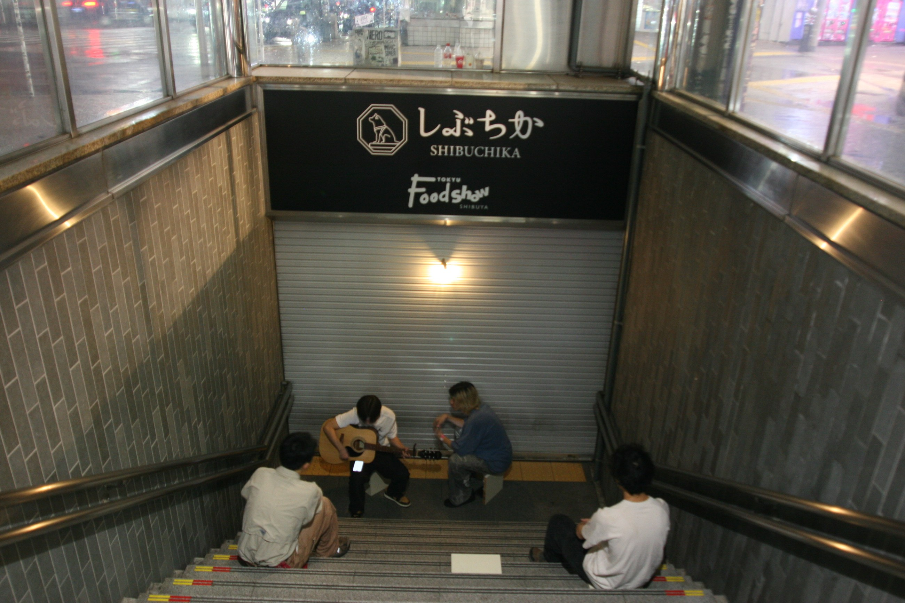
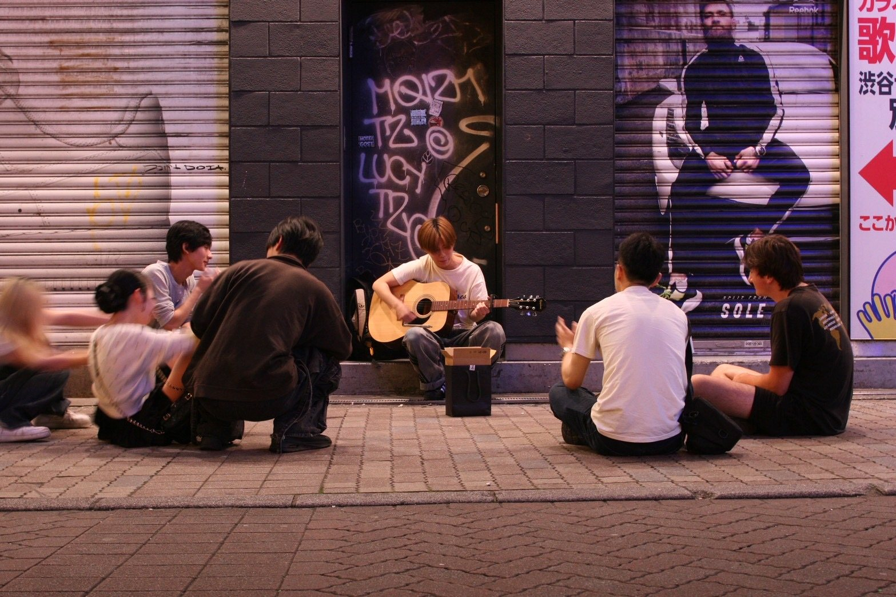
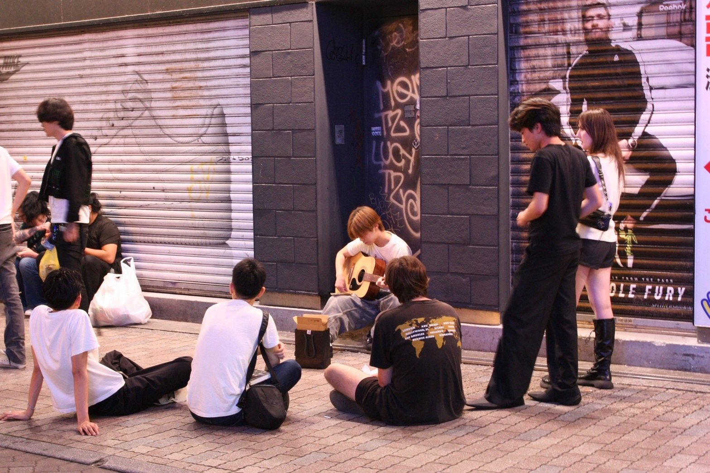
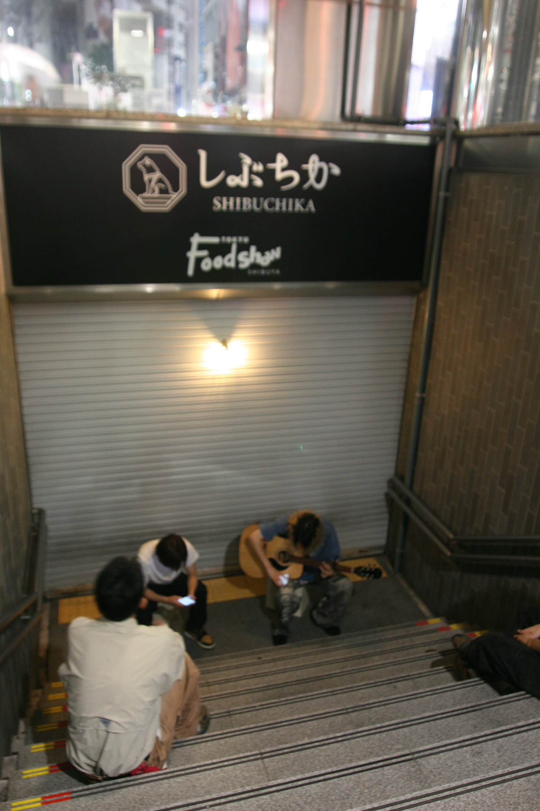
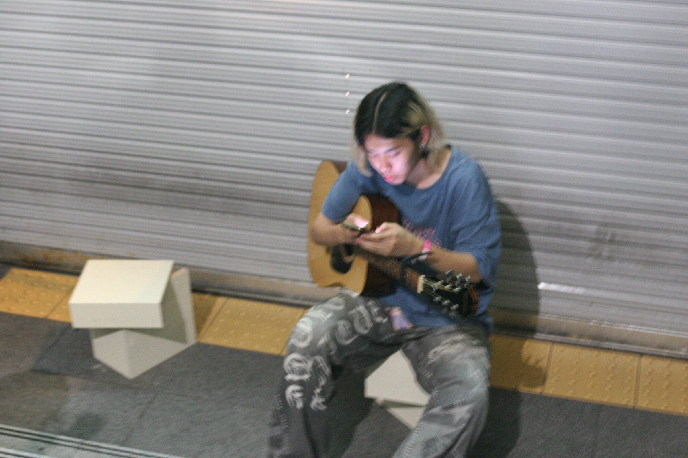

01
2026.06.19 / NIGHT SESSION
家具を置く前に、音が人を止めた。
6/19は、準備された実験ではなく、偶然出会ったNight Sessionとして扱う。
FIELD NOTES
A1 PRINT EDITION / WEB COMPRESSED INTO ONE PAGE
終電後の渋谷｜観測者から介入者へ
ばらばらなままに、ともにいる—渋谷の夜具
昼は広告を支える外壁が、夜には身体と行為を支える家具になる。
Shibuya After Last Train
Home / Field Notes / Underground Live / Detail / Lineage をA1一枚に再編集した印刷版。
HOME - FIELD NOTES - UNDERGROUND LIVE - DETAIL - LINEAGE

2026.07.03-07.04 / UNDERGROUND LIVE
01
家具を置く前に、音が人を止めた。
6/19は、準備された実験ではなく、偶然出会ったNight Sessionとして扱う。
FIELD NOTES
02
地下鉄入口を、小さなライブの縁にする。
地下鉄入口の段差、シャッター、通行の縁を使い、演奏とL字部材を同時に試した実験。
UNDERGROUND LIVE
03
昼は擬態し、夜は起動する。
昼は都市の外装に擬態し、夜は取り外されて、人が座り、演奏し、同じ時間を共有する道具として起動する。
DETAIL / LINEAGE
FIELD
FINAL REVIEW / FIELD NOTES

5/15、5/22、6/19、7/3-7/4を日付ごとのログとして分け、何を観察し、何を発見し、次の設計へどう変わったかを整理する。


LIVE
UNDERGROUND LIVE / 2026.07.03-07.04


階段に被せれば観客席、二つ組めば演奏者の椅子になる。
D
D｜昼夜 = 時間
昼は都市の外装に擬態し、夜は取り外されて、人が座り、演奏し、同じ時間を共有する道具として起動する。
C
C｜stool two modes = 道具
同じ部材が、座る人、演奏する人、荷物を置く人によって組み替えられる余地を持つ。
A
A｜cutaway / 構造
BODY -> L-STOOL -> HANGER -> LOCKING RAIL -> SECONDARY STEEL FRAME -> ANCHOR -> PRIMARY STRUCTURE
B
B｜corner exploded / 施工
Rhino/GHからの図版差し替え予定。外装保持系と人荷重支持系の分離を示す。
LINEAGE
FINAL REVIEW / LINEAGE
渋谷の夜間介入を、突然のアイデアではなく、場所の記憶、人の関係、描くこと、支えることの延長として読めるようにする。